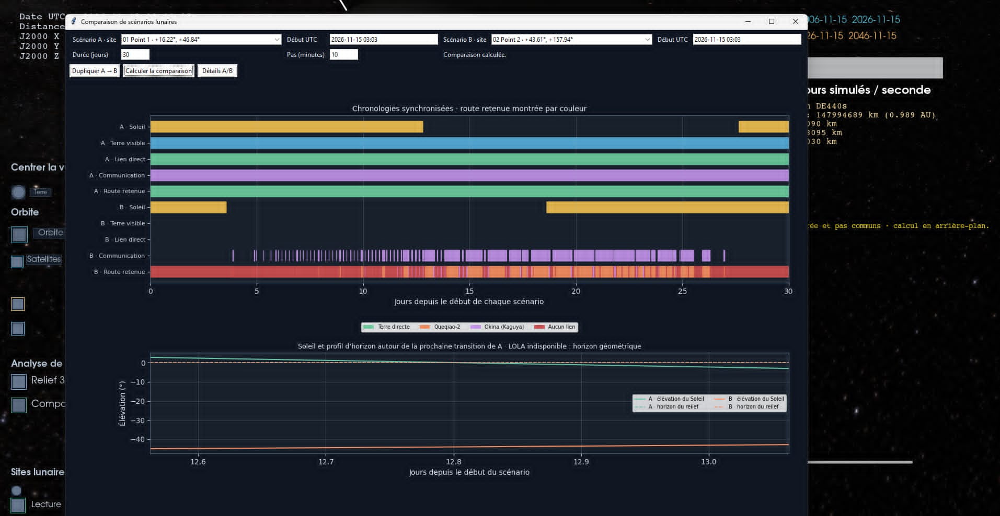

Using CisLunar
Select a lunar site, explore its terrain and compare two landing dates. The tutorial uses the French labels shown in the software.
1. Set the date
In the main window, choose Lune under Centre de la vue. Click SAISIR DATE, enter a UTC date as YYYY/MM/DD HH:MM:SS and press Enter. You can also use the date slider to move through time.

2. Add a site
Choose Apollo 15 from the bottom bar, or briefly click the lunar surface to add a custom point. Add a second site to compare two locations on the same date.
3. Explore the terrain
Click RELIEF 3D to open the terrain view for the selected site. Look for the central marker and contour lines. Right-click the terrain in this window to move the center point.

4. Open the site charts
Click GRAPHIQUE EXTERNE, then use Choisir les sites to filter the plots. Select Éclairement to see how much sunlight a horizontal surface receives over time.
5. Compare two scenarios and read the results
Open COMPARER A/B. Select a site and enter Début UTC as YYYY-MM-DD HH:MM for each scenario. To test two dates at the same site, select Dupliquer A → B and change B’s date. Set the shared duration and time step, then click Calculer la comparaison.
Compare the A and B bands at the same number of days from their respective start times. In this example, the two sites use the same start date. A has a direct link throughout the period shown. B communicates intermittently via the satellites shown in Route retenue (selected route).


6. Read the site characteristics
In the comparison window, click Détails A/B and read the panel for the site you want to examine. Check total sunlight duration, the longest period in shadow, and the next estimated Sun and Earth visibility transitions.
To find when a relay is needed, compare Lien direct (direct link) and Communication. If there is no direct link but communication is available, Route retenue shows which satellite is used. If no route is available, the timeline shows Aucun lien (no link).
Relays and model limits
The timeline distinguishes Earth visibility, direct links and relay routes. The Queqiao-2 and Okina demonstration orbits are simulated. Coverage is a geometric estimate. An operational link also depends on radio equipment and ground station availability.